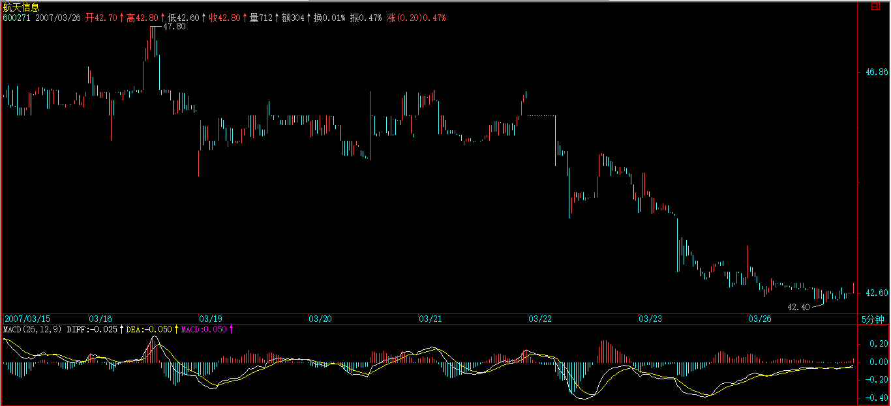

(2007-03-23 15:16:51)
股票都是废纸，还怕有钱买不着废纸？【韶山映山红】不怕有钱买不着废纸，所以买入要谨慎。买的级别可以偏大一点，或者二买优于一买，不见兔子不撒鹰。】因此，对于任何操作来说，只要赚钱卖出，是无所谓错误的；【韶山映山红】卖的级别可以偏小一点。不一定等筑顶的三卖，可以背驰就走，努力抓一卖。】反过来，股票是吸血的凭证，没这凭证，至少在股票市场里是真吸不了血的，因此，只要卖了能低价位回补，就无所谓错误。【韶山映山红】如果卖得不合理了，只要卖了能低价位回补，就无所谓错误。打短差，有差就算成功。大级别上涨走势，不丢失筹码就不计较中间的准确率与精度。★注意，这里说的依然是低价位回补，没说追高回补。】
至于卖了可能还涨，回补可能还跌，这是技术的精确度问题，【韶山映山红】是技术的精确度问题，也就是说，方向没有判错，就不要去计较。缠论不是拿来抄底逃顶的。】就像练短跑，如果你永远只会撒腿乱跑，那你不可能达到高层次，而基础的练习都很枯燥，甚至100米，每段怎么跑，多少步，可能都要按一个机械的要求来，最终形成一个韵律，这才有可能达到高层次。【韶山映山红】从机械的技术手段开始，最终达到一个韵律的艺术层面。】
股票的操作一样，首先就要培养这样一个韵律，不排除在这个培养、训练的过程中，开始还比不上以前撒腿乱跑的速度，但 坚持下去，等韵律感形成，那进步就不是撒腿乱跑的能比了。【韶山映山红】世事洞明皆学问，人情练达即文章。功夫在诗外。】
【韶山映山红】若禅精舍（陈秋明）：
对股票不要有感情，这是无数教训换来的经验，对于股票来说，只是用来赚取差价的凭据，一个工具，用过就扔才是正道。很多人把股票当回事，而将亏损反而不当回事，犯了大忌。去观照自己买入前和买入后持有阶段的念头，搞清楚是什么在指挥着你操作或者不操作，这很重要，但仅靠股票技术的知识可能是达不到的。
赚钱卖了就无所谓错误，只要能低位回补就无所谓卖早卖迟，首先方向上要正确，然后在方向正确的基础上才去追求准确。在股市里，准确其实并不是很重要，这违背很多人的认知和感觉，但事实就是如此。准确永远没有正确重要，在股市里如果说要长期稳定的盈利，那就几乎等于要长期稳定坚持做正确的事情，准确与精确，只有建立在正确的基础上才有意义。而所谓正确，就是根据买卖点进出的原则，就是零向量的观察者状态，就是用眼睛看而不是用头脑想，无情的根据走势给出的信号决定操作。
很多人喜欢准确度与精确度，也容易去崇拜准确度与精确度，这并不是不可以，但要记得快步跑是要建立在已经可以稳步走的基础上。准确与精确能决定你每一笔交易的盈利程度，但首先要做到的是能够盈利。就好像很多人超级关心板块轮动，殊不知掌握板块轮动是要建立在能够掌握买卖点的基础上，买卖点都搞不定，要板块轮动何用？不能脚踏实地，是大多数操作者无法掌握一门理论的共同点。
】
上节说了一个机械的操作程式，这就有一个基本的韵律，其中最大的就是向上段先买后卖与向下段先卖后买的韵律，如果这个韵律都错了，那操作就一团糟。【韶山映山红】基本的、最大的韵律：向上段先买后卖与向下段先卖后买。本质上是，向下的移动结束时开始抢每一个反弹的做多，向上的移动结束时开始抢每一个调整的做空。】
很多人的买卖其实都是靠天吃饭，买了，赌的就是上下两面，因此不管位置、不管时间、不管当下的走势结构，胡乱瞎买，然后又胡乱瞎卖。【韶山映山红】不能把握大的走势方向，就用已经走出来的小级别移动划分震荡区。】
大的韵律把握了，还有就是每向上向下段中每小段间操作的韵律，显然，只要其中一步错了，这舞步就乱了。这时候，唯一正确的选择就是停止操作，先把心态、韵律调节好了才继续。【韶山映山红】向上移动和向下移动是操作的分界，界限内，向上段和向下段的操作往往都是连续的，“每小段间操作的韵律”就是指界限内的段间操作，每三段对比做判断。】
而且，当你按这个机械节奏不断操作下去，人身体的生物节奏都会慢慢有所感应，甚至可以达到这种程度，就是那种该操作的图形出现时，生理上就仿佛有感应一般。其实，这一点都不神秘，就好象有些人睡觉，无论多晚，早上到点都会自动醒来，而股票的操作，都有一定的紧张度，而同级别走势类型分解的节奏，大致有一定的周期性，【韶山映山红】什么样的“周期性”？★以后研究。】长期下来，生理上有自然的反应就一点都不奇怪了。【韶山映山红】成为一种无意识行为。】
【韶山映山红】向上段的买卖操作主要集中在两种部位，下跌趋势的中枢移动之后的中枢震荡和底部构造中。向下段的操作反之。】
【韶山映山红】另外一个特点就是，中枢向下移动的过程中是空仓的，中枢向上移动的过程中是满仓的。所以是风险最小化、收益最大化的操作。难怪缠师说她是卷钱的机器。】
【韶山映山红】若禅精舍（陈秋明）：
盘中的感应是实有之事，长期按照一个模式去做一件事情，没有感应才是奇怪。这需要建立在长期的盯盘与丰富的操作经验基础上，并不是可以可以学习来的。而很多学习者总有一种奇怪的心态，看到高手的某些判断觉得很神奇，想要学这神奇，而并不愿意沉下心来取经历那个枯燥而漫长的过程。这有点类似在日线图上去分辨五分钟级别中枢，这种能力是在经过足够多的静态图形递归联系之后，可以自然而然掌握的能力，并不是可以刻意去学来的。所谓刻意的学，无非就是建立一些类似量化的手段，例如三根K线有重叠就可以看成是低级别的中枢之类，知其然而不知所以然，结果就是稍微遇到一些变化就无所适从。
】
注意，下面的分析，如果对数学推理陌生的，大概要迷糊透，所以请先准备纸和笔，对着画图，才能搞清楚。
按同级别分解操作，还可能有更广泛、更精确的操作。【韶山映山红】比38课更精确的是，是否返回形成中枢结构。】
对5分钟的同级别分解，以最典型的a+A为例子，【韶山映山红】前一天有人问：“从30分钟底背驰开始，向上的第一段假如是盘整，会表现为哪种形态呢？是a+A+b，还是单独的A呢？他们两者中枢的方向是不一样的，第一个下上下，第二个上下上. 这个问题不解决，判断起来很困难啊” “补充：判断困难的原因是, 比方A=a1+a2+a3, 当走到a+a1+a2时，我不知道已经形成一个中枢了，还是要等到后面的a3。” 缠师回答说：“这个问题，刚好是明天文章要说到的，请耐心等一天。” 这篇文章就是39课。只不过，并没有真的直接回答这个问题。间接的答案就是这个举例的表达式：“a+A”。当前面走势完成的时候，新走势都是从a开始的，都要走出一个a+A的结构来。没有a只有A的走势属于特殊的盘整震荡的情况，或者说，属于震荡继续延伸的情况。102课有一句：“任何走势，都可以唯一地表示为a1A1+a5A5+a30A30的形式。”盘整的表达式是a+A+b，趋势的表达式是a+A+b+B+c，为什么综合的表达式却是a+A的结构？也是同样的原因。 】
一般情况下，a并不一定就是5分钟级别的走势类型，但通过结合运算，总能使得a+A中,a是一个5分钟的走势类型，而A，也分解为m段5分钟走势类型，则A=A1+A2+...+Am。
【韶山映山红】5分钟的同级别分解，级别是指谁的级别？这里告诉我们，是a的级别，也就是指画线的级别，实际上画的每一根线都是5分钟级别的a和A1+A2+...+Am，这些画线构成的中枢A是30分钟的。也就是说，5分钟同级别分解的时候，看到的最大级别中枢是30分钟中枢，5分钟的走势形态反而被忽略，只剩下没有内部结构的线了。从另一个角度看，5分钟同级别分解所看到的30分钟中枢，并不构成30分钟走势的分析。】
【韶山映山红】即使是a低于5分钟级别的情况，“通过结合运算，总能使得a+A中,a是一个5分钟的走势类型，”但是看上去只不过是拿这个作为理由，去接受a低于5分钟级别的事实，并没有要求我们做了重新结合运算，再用新的组合去划分走势类型。后面把A“也分解为m段5分钟走势类型”的时候，没有再提及是否需要划分一部分走势去支援a升级的问题，只说“A=A1+A2+...+Am”。★以后研究。】
【韶山映山红】
神燕(179503921) 10:47:22
你这样说，让我想起一些问题，以前头脑中一直有这个思路，就是和走势的级别相关，同时和小转大相关
就是走势是按级别完整划分的，不同周期图上的完整划分，和从1分递归上来的完整划分是两回事
神燕(179503921) 10:48:49
递归完整就是全部要三三组合，而周期图上的则不然
这样也好像理解了你以前，不是经常有某一段不画的原因了
下来再理理这个思路
神燕(179503921) 10:49:56
不仅仅是周期图的划分，更重要的是级别的划分
神燕(179503921) 10:51:01
我是说，按级别分解，只保证你分解的级别完整性，而不必以递归的级别来处理完整性
神燕(179503921) 10:52:10
我正在看桃花讲解的70课，关于17－38的，也是讲的自相矛盾不少呀
虽然好像每一个分解都有道理，可是前后联系起来，就解释不通了
我才看，正在整理，整理完发你们讨论一下
韶山映山红(20323094) 10:54:55
我一直就不是同一个级别的完整划分，而是各个级别共存。所谓自然生长。
神燕(179503921) 10:56:14
@韶山映山红 是的，但是你的问题是，你的自然生长中间有断层，这样是不行的
我现在想，自然生长的，是两头有断层，绝对不能是中间有断层
神燕(179503921) 10:57:45
两头，就是小A和小C之类的，一个走势的最开始的进入段，和最后的离开段，而不是中间的连接段可以断开
马上看桃花讲解的这个17－38就会发现这个问题
韶山映山红(20323094) 11:02:08
中枢的连接段可以不存在，走势的连接段就同样可以不存在。
韶山映山红(20323094) 11:03:24
小转大可以出现在任何地方，低级别走势也就同样可以出现在任何地方。
所谓低级别走势，就是未完成的小转大。
韶山映山红(20323094) 11:04:44
小转大，是一个走势的非正常死亡。
任何级别的任何走势，都可以非正常死亡。
】
想考虑a+A是向上的情况，【韶山映山红】先考虑a+A是向上的情况。】显然，Ai当I为奇数时是向下的，为偶数时是向上的，【韶山映山红】a+A是向上的情况，那么首先a是向上的。向上走势的中枢是下上下，所以i为奇数时向下，i为偶数时向上。】开始先有A1、A2出现，而且A1不能跌破a的低点，【韶山映山红】“开始先有A1、A2出现”，这样a、A1、A2就完成了最基本的线段类盘整走势。“A1不能跌破a的低点”，不是说趋势背驰之后的“A1不能跌破a的低点”，而是跌破了就不是a+A向上的情况了。】如果A2升破a的高点而A3不跌回a的高点，【韶山映山红】A3不跌回a的高点，A就不成为中枢，就是线段类上涨趋势了。】这样可以把a+ A1+A2+A3当成一个a`，还是5分钟级别的走势类型。【韶山映山红】a是5分钟级别，“a+A1+A2+A3”是线段类上涨趋势，还是5分钟级别，为什么要“当成一个a`”呢？★a和a`有什么区别呢？★1，分解组合的需要。2，下面的综合走势那一段讲了a`的价值。】
【韶山映山红】这一段是a+A的特殊情况，A不构成30分钟中枢，a+A实际上还是5分钟级别的走势类型。但是可以把a+A1+A2+A3当成一个30分钟中枢的a`。】
因此，这里可以一般性地考虑A3跌破a的高点情况，这样，A1、A2、A3必然构成30分钟中枢。【韶山映山红】这个“30分钟中枢”，不是严格意义上的次级别走势类型的重叠，和走势类型划分的30分钟中枢，即使表面相同，本质上也还是不一样。】
因此，这一般性的a+A情况，都必然归结为a是5分钟走势类型，A包含一30分钟中枢的情况。【韶山映山红】5分钟同级别分解，画5分钟级别的线，构成30分钟级别的中枢，分析的是30分钟级别的走势。】
【韶山映山红】这一段是a+A的一般情况，A2盘整背驰或小转大，A3跌破a的高点，A1、A2、A3构成30分钟中枢。a是5分钟走势类型，A是30分钟中枢。】
【韶山映山红】既然是5分钟同级别分解的操作，为什么这里还要讲“30分钟中枢”的问题呢？★这里的“30分钟中枢”并没有中枢的意义，只是为了小转大的判断。线段类盘整背驰要跌破前高形成中枢是操作信号，没有盘整背驰却跌破前高形成中枢也是操作信号，都围绕形成中枢做文章。】
【韶山映山红】若禅精舍（陈秋明）：
总有人不理解为什么“总能使得a+A中，a是一个5分钟的走势类型”，这是通过前后走势段的结合而来的。
上图是沪指某一段的五分钟K线图，图中所标数字之间，都是一分钟级别线段，也就是根据一分钟K线图划分好线段，然后把这一分钟级别线段标注在五分钟K线图中。这样标注的好处是有利于更大级别的走势分析，相对于在一分钟图上标注一分钟级别线段，更加清晰一些。
图中，1-2只是一个线段，从2开始，到13，习惯的划分是2-5、5-8、8-13，这样比较符合走势段的常规形态。而如果要进行一分钟级别走势类型的同级别分解，那么对于2-13这三段一分钟级别走势类型来说，1-2显然与他们不是同级别的。这就是原文中所说的“一般情况下，a并不一定就是5分钟级别的走势类型”，但通过结合律，可以把1-4作为第一段一分钟级别走势类型，然后4-7、7-10、10-13，这样就是四段一分钟走势类型的连接。
这样的分解，存在的问题是每一段走势类型的构成形态都比较古怪，不太符合常规认知，此外就是这些走势段的力度，不太容易用常规方法去判别大小。这些问题在前两篇中曾经讲过，该图是实例，同时该图刚好符合本段所描述的A3跌破a的高点情况。
】
【韶山映山红】若禅精舍（陈秋明）：
这一段文字，用笔在纸上照着画画就应该清楚了。
上图同样是五分钟K线图，数字之间是一分钟级别线段。42-43是一分钟线段，43-48是一分钟级别中枢，但经过结合，使42-45为一分钟走势类型，45-48为一分钟盘整，如果继续向后同级别分解，只能48-51为一分钟盘整，否则48-49只有线段级别，就无法保持同级别分解了。但从51开始，到54是一分钟盘整，54-57也是一分钟盘整，剩下57-58仍然是线段。所以在分解上，最好是将49前后的走势划分为两个部分，这样42-49为一分钟盘整，43-48为该一分钟走势类型的中枢。再向后面，58-65、65-68、68-71进行同级别拆分，也可以58-61、61-66、66-69这样拆分。
可以看出，同级别分解，相对于走势类型的划分，需要根据图形结构的特征，来决定划分的节点，因为涉及到结合律，所以有些走势需要进行前后归属的取舍。有人可能要问同级别分解里面不是不允许中枢扩张，而是处理成盘整+盘整吗？盘整加盘整的情况，需要有两个同级别盘整走势类型，对一个中枢来说，前三个次级别走势段完成后，后面延续多少是不患的，例如中枢次级别abc完成了，然后走了df之后就离开中枢了，对于盘整加盘整来说，相当于后面一个盘整未完成，那就只能划分到abc这个中枢里面。
前面说过，分析有两种方式，一种围绕中枢来，另一种围绕走势类型来。这里讲的就是纯粹围绕走势类型的情况，这种情况不考虑中枢问题，只比较相邻同向走势段之间的盘整背驰与否，但就像前面说的，同级别分解容易使划分出来的走势结构，不太符合常规，而使力度的判断成为问题，这种较古怪结构的力度原文中没有讲，但可以通过指标以外的方式解决。
所谓力度，无非就是空间与时间的关系问题。假设时间是一秒，空间是100个点位，那力度当然很强，像一些股票开盘一字板，相当于一秒钟的时间内实现了十个百分点的空间，属于最强的。那么同样的时间不同的空间，或者同样的空间不同的时间，就是判别力度大小的准绳。指标只是辅助判断力度的，真正的力度就是时间和空间的对比关系。
】
把a定义为A0，【韶山映山红】首先是方向问题。向上走势的中枢是下上下开始的，a的方向不符合中枢的要求，不能列入中枢的组成部分，为了同级别分解的分析与操作，不管是不是，都“把a定义为A0”。 其次是级别问题。“一般情况下，a并不一定就是5分钟级别的走势类型，”不管是不是，都“把a定义为A0”。】则Ai与Ai+2之间就可以不断地比较力度，用盘整背驰的方法决定买卖点。【韶山映山红】把a定义为A0，则A0也可以参与力度比较。所有走势都是5分钟级别的一段接着另一段，每一段都可以用线段类盘整背驰的方法做力度对比。】这和前面说的围绕中枢震荡的处理方法类似，【韶山映山红】只是类似，而不是相同。不同之处在于，同级别分解是任意“Ai与Ai+2之间”“不断地比较力度”，而“围绕中枢震荡的处理方法”还有进入段离开段的比较。】但那不是站在同级别分解的基础上的。【韶山映山红】24课讲的围绕中枢震荡的处理方法。不突破中枢的盘整背驰必回跌。突破中枢的盘整背驰回跌，或跌回中枢则继续盘整，或不跌回中枢形成三买点。】
注意，在实际操作中下一个Ai+2是当下产生的，但这不会影响所有前面Ai+1的同级别唯一性分解。【韶山映山红】Ai+2是当下正在进行中的走势，前面已经同级别分解的划分不会因为Ai+2的变化而变更。换句话说，这个划分是当下的，不会分割后面的走势去支援前面的划分。】
这种机械化操作，可以一直延续，该中枢可以从30分钟一直扩展到日线、周线甚至年线，但这种操作不管这么多，【韶山映山红】不管是多大的级别，都可以分解成5分钟级别。所以不管实际的级别，眼里只有5分钟级别。因为同级别分解的级别小，所以既吃上涨的小波动，也吃下跌的小波动。】只理会一点，就是Ai与Ai+2之间是否盘整背驰，【韶山映山红】线段类盘整背驰。总是当下的这一段与相同方向的上一段比较。】只要盘整背驰，就在i+2为偶数时卖出，为奇数时买入。【韶山映山红】向上的盘整背驰卖出，向下的盘整背驰买入。】
如果没有，【韶山映山红】如果Ai与Ai+2之间没有盘整背驰。】当i为偶，【韶山映山红】i为偶数以保证Ai是向上段。】若Ai+3不跌破Ai高点，【韶山映山红】Ai+3不跌破Ai高点，既反证Ai+2对Ai没有盘整背驰，也证明Ai+2的终点没有小转大的下跌。用笔形成线段的眼光看，类似于线段破坏的第二种情况的图形，没有出现笔破坏，而是走成了线段类上涨趋势。这时候不采取任何行动，只是等待。】
则继续持有到Ai+k+3跌破Ai+k高点后【韶山映山红】这里引入了k是因为线段类上涨趋势可以一直持续，不能预设什么时候结束。为什么会有“Ai+k+3跌破Ai+k高点”的情况发生？完全分类，只有两种原因：1，Ai+k+2对Ai+k盘整背驰了。2，Ai+k+2对Ai+k没有盘整背驰，但是Ai+k+2的终点小转大了。如果是Ai+k+2对Ai+k盘整背驰，就归入了前面说的操作流程，在Ai+k+2那个当下就要卖出，所以这里说的是Ai+k+2的终点小转大导致Ai+k+3跌破Ai+k高点的情况。这里假设小转大不能用其他方法判断，所以跌破Ai+k高点就成了判断依据。】在不创新高或盘整顶背驰的Ai+k+4卖出，【韶山映山红】这里是“盘整顶背驰”这个词第一次出现在原文中。 Ai+k+3出现小转大的情况以后，Ai+k+1、Ai+k+2、Ai+k+3形成中枢，线段类上涨趋势形成了a+A的形态，然后的中枢离开段Ai+k+4分三种情况：1，Ai+k+4不创新高，卖出。2，Ai+k+4创新高，但是又盘整顶背驰了。卖出。3，Ai+k+4创新高，没有盘整顶背驰，继续持仓待涨。】其中k为偶数；【韶山映山红】i为偶数，k为偶数，以保证Ai+k是向上段。】
【韶山映山红】这里的Ai+k+2力度大于Ai+k，否则就是前面的线段类盘整背驰的情况了。同样，Ai+k+4的力度只要小于Ai+k+2的力度，就归入线段类盘整背驰的情况，跟Ai+k+3是否跌破Ai+k无关。所以真正需要做判断的只有一种情况：Ai+k+4的力度大于Ai+k+2的力度，但是作为中枢的离开段，力度小于中枢前面的进入段（……+Ai+k）的力度。所以这里使用了“盘整顶背驰”这个词。也就是说，对线段类上涨趋势来说，“盘整顶背驰”是a+A盘整背驰。这样的解读正确吗？★以后研究。】
【韶山映山红】这个盘整顶背驰还有一个特征：不是线段类盘整背驰形成的正常中枢，而是小转大跌破前高形成的中枢。线段类盘整背驰形成的中枢，小转大形成的中枢，这两种中枢有没有区别？★以后研究。】
【韶山映山红】Ai+k+2之后，小转大的Ai+k+3跌破Ai+k高点时决定卖出，问题是能不能预判Ai+k+3的最终跌幅？会不会直接跌太深，以至于Ai+k+4都没有意义了？★Ai+k+2的不盘整背驰所代表的向上力量，对小转大的抵抗有多少？★能不能更早的辨别Ai+k+4是否创新高？★以后研究。★】
当i为奇数，【韶山映山红】当i为奇数，Ai向下，“Ai+3不升破Ai低点”，显然前提是Ai+2对Ai没有盘整背驰，没有回补。】若Ai+3不升破Ai低点，【韶山映山红】“Ai+3不升破Ai低点”，那么Ai、Ai+1、Ai+2、Ai+3和未来的Ai+4形成了线段类下跌趋势。】则继续保持不回补直到Ai+k+3升破Ai+k低点后在不创新低或盘整底背驰的Ai+k+4回补。【韶山映山红】线段类下跌趋势，没有趋势背驰的情况下，小转大结束了线段类下跌趋势，形成线段中枢，转折后的二买回补。】
【韶山映山红】这里是第一个“盘整底背驰”。参照第一个“盘整顶背驰”。】
【韶山映山红】“在不创新高或盘整顶背驰的Ai+k+4卖出”。问题是，Ai+k+4不创新高或盘整顶背驰的情况下，反正是卖出，跟Ai+k+3是否跌破Ai+k无关。那么，为什么还要关心跌破前高的问题呢？★以后研究。】
【韶山映山红】这一段是a+A的综合情况。先有一个a+A的特殊情况，A不是30分钟中枢，但是可以把a+A1+A2+A3当成一个30分钟中枢的a`。然后的走势是a+A的一般情况，A是30分钟中枢。两种情况结合起来分析，而不是单纯的做每一段的分析。】
看完上面这段，至少90%以上的人都心跳加速，头晕眼花。不过没办法，这是最精确的表述，画着图应该不难明白。【韶山映山红】画图，形象化，可以帮助理解。最终还是要自己清理出一个流程图。】
以上的方法，最大的特点是，就是在同级别分解的基础上将图形基本分为两类，一类是“当i为偶Ai+3不跌破Ai高点”或“i为奇数Ai+3不升破Ai低点”；一类是“Ai与Ai+2之间盘整背驰”。【韶山映山红】“在同级别分解的基础上将图形基本分为两类”：线段类盘整，线段类趋势。】注意：这里只是形态的分类，不是连续的完全分类。】
【韶山映山红】一个拿是否跌破前高/升破前低说事，一个拿是否盘整背驰说事，为什么这里的分类不是同一个维度？两个维度的分类有四种情况，还有两种为什么不说？★因为这个时候缠师说的还是盘整背驰必破前高，所以就只说两种情况了。
完全分类是四种情况：
1，盘整背驰的跌破前高。这个就是原文说的“Ai与Ai+2之间盘整背驰”。
2，盘整背驰的不跌破前高。盘整背驰一般是必然跌破前高的，除非在跌破之前又发生了向上的小转大。这种情况在机械操作法里也不会踏空，因为没跌破前高就是没有新低，买入。
3，没有盘整背驰的跌破前高。也就是发生了向下的小转大，在不看次级别走势的机械操作法里，等于是一卖抓不住，只能选择二卖走人。
4，没有盘整背驰的不跌破前高。这个就是原文说的“当i为偶Ai+3不跌破Ai高点”，形成了线段类上涨趋势。】
对这两种情况采取不同的操作策略，构成了一种机械的操作方法。【韶山映山红】这两种说法容易让人误会，好像先要等着看是否跌破前高。实际上是先做盘整背驰判断，背驰就卖，不背驰就持仓等下一次盘整背驰判断。任何一次遭遇向下的小转大，都在反弹的时候出掉，除非反弹初始的时候力度很大。这个小转大是个极大的隐患，需要进一步学习，做出单独的应对流程。★以后研究。】
【韶山映山红】同级别分解机械操作法的应用，类似于开商店，股票就是存货，还要有流动资金。在盘整背驰点买卖就是进货出货。挣的是差价，而不是股票的升值。】
【韶山映山红】若禅精舍（陈秋明）：
相对前面的走势类型划分，同级别分解的难点在于对走势进行划分时，某些次级别走势段的归属问题，以及划分后的力度判别问题，是属于较为复杂的一种分析方式。如前文所说，同级别分解并不适合初学者涉及，对这方法的应用，要建立在对走势类型划分的透彻理解之后。
而实际操作，其实都是分段进行的，在连续的走势图中，可能某些走势段适合同级别分解来划分，有些走势段适合用中枢的方式来分析，根据走势特征，灵活的根据当下走势对方法进行选择性的分析，是最好的。
】
【韶山映山红】分层做完全分类，就是分析流程，也就是机械操作法的流程。慢慢的把这个捋顺。
1，Ai与Ai+2之间是否新高/新低或新高/新低而盘整背驰？
1.1，Ai+2没有新高/新低或新高/新低而盘整背驰，卖出/买入。回到步骤1。
1.2，Ai+2新高/新低、没有盘整背驰，持股/持币不动。下一步。
2，Ai与Ai+2之间没有盘整背驰，Ai+3是否跌破/升破Ai？
2.1，Ai+3没有跌破/升破Ai，持股/持币不动。回到步骤1。
2.2，Ai+3跌破/升破Ai，下一步。
3，Ai与Ai+2之间没有盘整背驰，Ai+3跌破/升破Ai，Ai+4是否新高/新低？
3.1，Ai+4不创新高/新低，卖出/买入。循环回到步骤1。
3.2，Ai+4创新高/新低，但是盘整顶/底背驰，卖出/买入。回到步骤1。
3.3，Ai+4创新高/新低，没有盘整顶/底背驰，持股/持币不动。回到步骤1。
】
【韶山映山红】
不同的返回情况，都只要回到前低就算完成基本任务，而不是对称的起始点。这是力度分析的一个特点。
那么，完成任务，是完成的什么任务？
是衰竭的卖力的任务。
如果要回到起始位置，还要有当下的买力。
也就是说，买的时候，看的是卖力衰竭确保带来的一小段反弹。但真的只有这一点反弹的时候，就要卖出。只有买力使得走势超越起始点，意味着反弹的力度足以和下跌的力度抗衡的时候，才继续持有。
这就是机械操作法里面，不新高就要卖的原因。
附录：
【韶山映山红】附录时间2007-3-23 15:18。】
今天大盘没什么可说的，周四、周五的血战已经在周三提前预告。
今天中行主动示弱，不让汉奸有借利好出货的机会，为大盘以后的发展留下很大的余地。不过汉奸不会因为这两天的折腾而死心，那两个高点的连线依然在上面，没有效突破前，依然会人心浮动，汉奸依然会随时发难，所以耐心是最重要的，而震荡是稳定人心的最好办法。
各股方面，具体的不能说了，免得汉奸有口实，最近打小报告的人忒多，而这又是汉奸的强项。反正前面说的那五个板块，加上最近说的旅游、科技之类的都会陆续表现的。瓜田李下，本ID就不多说，说的都是梦话，如此而已。
今天大盘没什么可说的，周四、周五的血战已经在周三提前预告。今天中行主动示弱，不让汉奸有借利好出货的机会，为大盘以后的发展留下很大的余地。不过汉奸不会因为这两天的折腾而死心，那两个高点的连线依然在上面，没有效突破前，依然会人心浮动，汉奸依然会随时发难，所以耐心是最重要的，而震荡是稳定人心的最好办法。
各股方面，具体的不能说了，免得汉奸有口实，最近打小报告的人忒多，而这又是汉奸的强项。反正前面说的那五个板块，加上最近说的旅游、科技之类的都会陆续表现的。瓜田李下，本ID就不多说，说的都是梦话，如此而已。
2007-3-23 15:18
[匿名] 首钢股份 2007-03-23 15:19:26
女王！！亏死了，汉奸这么无能，我白白腾出资金一个也补上！
女王够恨的，北京旅游连个建仓的机会都不给我啊！！
[匿名] CCTV 2007-03-23 15:19:53
妹子，你的000802太厉害，777也很牛呀。
==
本ID只在梦中说要去北京旅游，醒来才发现原来就在北京，什么北京旅游，本ID不知道，现在正打击庄家，本ID可没那本事当庄家。本ID这里只说梦话，什么都没说。【韶山映山红】000802北京旅游，2014.10.24变更为北京文化。这里是第二次回应“北京旅游”。】
2007-3-23 15:23
[匿名] 大盘 2007-03-23 15:17:25
对于我们小资金散户，我发现如果2-3％的超短差也不想放过的话，估计买入股票的时候就得考虑T+1因素了，不知大家有什么方法，
特别在下午2：40点以后，3买或者2买接近形成（出现底背离段了），但是还没有彻底走完的情况下，因为如果次日买入，虽然大涨，但是可能次日就又会出现一个可观的回试低点。
如果是当天买入，又害怕3买没有真正形成，继续下探回到原来中枢。
昨天和今天600178的表现就是我所表述的一个例子 【韶山映山红】600178东安动力。】
----------
[匿名] 新年好 2007-03-23 15:22:35
我也有大盘同学的这个疑问，我今天是每到一个低点就补一些，这样下来成本是高了点，但是比着踏空好点。
==
只要你不是买到最低那一笔，总有被套的时候，只要大方向不错就没问题。
如果怕，就分两笔，这样就没必要怕了。
2007-3-23 15:27
[匿名] 塔 2007-03-23 15:28:39
老大上市既布局的601333,今日派上用场了
禅理论告诉我们 601333放量突破上市以来的高点
同学们 上啊！！！！！！！！！！！！！！！！！！
【韶山映山红】601333广深铁路。】
==
对付汉奸的武器多着，其他去年很牛，这几个月严重调整的板块，也会动的。所以前段时间才说，不能光炒三线，比价在那里，靠假消息乱搞，等于帮助汉奸。【韶山映山红】这里是原文第二次出现比价这个词。】
不够，散户不一定买指标股，因为相对还是慢点，可以多关注10元上下的二线股，只要盘整足够，重新有启动迹象的，都可以关注。
2007-3-23 15:33
弈通流 2007-03-23 15:30:38
首次在老师在的时候登上首页——问老师好！
潜心见、闻、学、行中！
=
好
2007-3-23 15:34
[匿名] 缠迷 2007-03-23 15:29:56
缠妹妹，我是新手，今天大盘5分钟级别13：25那个地方是不是背驰啊？谢谢
==
不是，是一个最小级别的背驰，然后是一个对称走势拉回中枢，可以看成是原来中枢的一个小级别震荡。
2007-3-23 15:38
[匿名] 新手却是老粉丝 2007-03-23 15:33:36
楼主好,我几乎天天都来这看看您们,但最近才有时间学习股票理论.中枢的概念我大致清楚了,可是一旦打开图时就SHA了,图里尽是高高低低的,不知怎么样去找相关的中枢,是目测?还是用"区间统计"?
==
你首先要搞清楚级别，然后搞清楚中枢定义的递归方法，这是最基础的，课程里都有。
2007-3-23 15:40
[匿名] 酒吧心情 2007-03-23 15:28:02
JJ好,今天帮同时练了一下000938,在下午的时候抓了个12.20,虽然不是很精确,但是小有收获.
目前的问题是个股配合大盘的问题.
如果选择大盘股票,比较稳妥,看图行事.但是如果选择个股,特别是对指数灵敏度高的,在现在的高位,虽然看到小级别买点,但总是怕大盘单边跌,然后在T+1的模式下很难获利.
希望JJ 能够指点,怎么样在这种高位踩准节奏.
==
这几堂课就是说这个问题，你必须有一定的节奏韵律。例如，高位没走，低位去回补等于加仓，这样不好，一定要搞清楚向下段与向上段。
特别资金不大的，卖就全买，回补如果信心不足，可以分单回补。只要是先卖的，回补起来就不会害怕了。【韶山映山红】卖点卖更重要。】
所以节奏是第一的，你跳舞，节奏全乱，会有好心情、好心态吗？
2007-3-23 15:44
[匿名] christine 2007-03-23 15:42:07
对不起，缠主，我的问题不该这么问，二线蓝筹是从沪深300中找还是？能否给个明示。谢谢！
==
前段时间成分股调整比较多，当然更有机会表现。
2007-3-23 15:48
对不起，今天要去腐败一下，再不走就塞车了，北京的路，等到下班时基本没法走。
先下，再见。
2007-3-23 15:51
[匿名] 缠迷 2007-03-23 15:50:46
缠妹妹（我40岁了，不知道这么称呼你可以不，呵呵），我想问下，5、15、30、60这几个级别哪个级别发生背驰买股票把握最大。我是新手啊，大家别笑话我问的没有技术含量啊，呵呵。
==
临走回答一下，事情没有那么机械，还有a+B变成a`+B的情况，你必须把前面的课程看一遍，彻底消化，一两句话没法说清楚。
先下，再见。
2007-3-23 15:53
(2007-03-25 13:50:10)
刚过去的世纪，十九世纪下半叶以后资本全球化的逐步展开，在资本世界大同的迷幻中，把人变成孤魂，打入资本的鬼蜮，永无停歇地游荡。没有家园，所有人文主义者的幼稚催眠都已失效，孤魂在幻影般的杀戮中轮回，永远走不出的鬼蜮，所有的光都引向更深的黑暗。
上世纪的所有文化、哲学，五花八门，都不过是孤魂的哀号，伊甸园已永远失去，打破神权换来的是更深刻、更无处不在的资本统治，人与世界隔离、人与人隔离，在二次大战的高潮中，在铁火与精血中，人，可以走出奥斯维辛，却永远走不出存在的鬼蜮。
十九、二十世纪之交，一位伟大的作曲家，一位德奥伟大音乐传统的最后传人，为这孤魂游荡的世纪给出了预言性的描画。他的名字叫古斯塔夫·马勒，又一个犹太人，背着这无家民族的历史，为人类家园的远去写下夕阳中历史所褪落的那一片灰黄。
今天播放的是他两部早期作品
《旅人之歌》
旅人，流浪者，
永远，没有家园的游荡。
《巨人》
第一交响乐，
没有巨人的巨人时代，
思想，二十世纪的瘟疫
今天北京天气不错，在人间四月天来临前，听听马勒，最合适不过了。
先下，再见，外面有无数的鲜花正在枝头等着。
2007-3-25 13:51
(2007-03-26 15:19:01)
子贡问君子。子曰：先行其言而后从之。
杨伯峻：子贡问怎样才能做一个君子。孔子道：“对于你要说的话，先实行了，再说出来[这就够说是一个君子了]。”
钱穆：子贡问如何才是一君子？先生说：“君子做事在说话前，然后才照他做的说。”
李泽厚：子贡问什么是君子？孔子说：“先履行所说的，然后再说。”
详解：
子贡，孔子最出名的学生之一，聪明而善辩，正是上章孔子所说“语之而不惰者”，但在孔子心里，他和颜回是有区别的，从《论语》相关章节就不难明了。
本章，子贡问君子的标准问题，其实，这是一个假问题，君子“闻见学行”“圣人之道”，并不是一个道德标准所能规范的。子贡希望得到一个静态的标准性定义，孔子却用给出了一个当下性回答：“先行其言而后从之”。
上面三位的解释，似乎“行在言先”，没有说出来就不是“言”了，但语言是存在的家园，和是否说出来无关。这种强调说不说的逻辑，就是培养伪君子的最好温床。
其实，“先行其言而后从之”，是“先行其言而后从其言”的缩略。 “行”，发hang，连续贯穿；“言”，不单指出言论，更包括人的一切思想以及相应的行为；“行其言”，把他的言论、思想以及相应的行为连续贯穿，也就是孔子在后面所说的“吾道一以贯之”，只有“行其言”，才可能“一以贯之”；“从”，通“纵”，广泛，光“一以贯之”，而不能“从之”，不能使之广泛，那不过是小圈子甚至是个人的自渎，没什么意义。
缠中说禅白话直译
子贡问君子。子曰：先行其言而后从之。
子贡问君子，孔子说：“先使自己的言论、思想以及相应的行为一以贯之，然后再使之广泛。”
子贡问曰：“赐也何如？”子曰：“女，器也。”曰：“何器也？”曰：“瑚琏也。”
杨伯峻：子贡问道：“我是一个怎样的人？”孔子道：“你好比一种器皿。”子贡道：“什么器皿？”孔子道：“宗庙里盛黍稷的瑚琏。”
钱穆：子贡问道：“赐怎样呀？”先生说：“你是一种有用之器。”子贡道：“何种器呀？”先生说：“你像是放在宗庙里盛黍稷的瑚琏。”
李泽厚：子贡问孔子：“我怎么样？”孔子说：“你是一种器皿。”问：“什么器皿？”答：“敬神的玉器。”
详解：
本章可以看出，孔子是一个很有幽默感的人。子贡，聪明而缺智慧，却对自己的聪明甚为自负，所以就问孔子“我究竟怎么样？”希望得到孔子的肯定。“赐”，是子贡的名。孔子一语双关提醒子贡“君子不器”，子贡不明白，还以为孔子说他是一种器皿，就反问什么器皿。孔子很有幽默感地告诉他，是瑚琏，一种宗庙里盛黍稷敬神的名贵玉器。
知识分子、儒生，总有点臭美的传统，其实，百无一用是书生，儒生那些鬼把戏，最终都成了更大的政治经济把戏的炮灰，知识分子，不是被人当枪使、当旗忽悠就是百年寒门当寒号鸟哀鸣。孔子这里的幽默更绝，宗庙里盛黍稷的瑚琏，就算把你供起来，也不过是祭坛上的摆设而已，至于知识分子好争的名，不过如摆设那玉器的成色，无论成色如何好也还是摆设而已。
缠中说禅白话直译
子贡问曰：“赐也何如？”子曰：“女，器也。”曰：“何器也？”曰：“瑚琏也。”
子贡问：“我，怎么样？”孔子说：“你，“器”呀。”问：“什么器皿？”答：“宗庙里盛黍稷的瑚琏那样的名贵器皿”
（待续）
今天大盘按这计划走，突破上面的压力线，当然，其有效性还需要确认。
中国银行压着不涨，就是对大盘最大的支持，汉奸想捣乱也没机会，其他板块不断轮动，今天10元上下的二线股表现很好，这个势头应该延续。
一个最好玩的事情，今天已经有人通过某些渠道散风给本ID，说明天是上次大跌的一个月纪念，又是星期二，明天要全力砸盘，把本ID给毁了，本ID等着，本ID只点火，决不死顶，今天是全民启动，就看汉奸明天怎么表演。
个股不说了，三线里有真正题材的还会涨，其他风险，最主要是监管风险比较大。二线是目前最好的选择，10元上下，如果业绩特别好的，在15元上下也可以，都是今后行情的重点。如果不会找，看300成分股，在相应区间不难找到。
2007-3-26 15:20
[匿名] 小鸟 2007-03-26 15:22:00
因为有事,很久没来了,问妹妹好！
==
都好
2007-3-26 15:23
[匿名] 股虱 2007-03-26 15:23:13
禅MM：根据您的理论，买点买卖点卖，近期颇有些斩获，但操作中也遇到些问题烦请解答：
1、上周五（23日）发现600271的30分钟背驰，【韶山映山红】600271航天信息。】
5分钟也背驰，符合区间套原理，

上午在44元跟进，但下午却随大盘大幅跳水，不知我起初的判断是否有误？
后来我发现其图形并未走坏，背驰仍然成立，故在43元左右补仓，不知是否妥当？

2、近期发现有买点的股票基本是10元以上的高价股，低价股基本全是卖点，估计下阶段的热点应该是绩优高价股。可以这样估计吗？
==
这问题已经早说过了。没有真正题材的三线股，监管压力很大。
600271周五是1分钟背驰，后面出现反弹，不过力度有限。【韶山映山红】600271航天信息。】
5分钟当时并没背驰，就算看MACD，也没明显回拉。
注意，最好选择周线刚脱离底部的股票，特别那些技术不好的，就算判断错误，也有改正的时候。
2007-3-26 15:33
[匿名] wsmrzw 2007-03-26 15:31:42
缠妹妹，600855如何？军工板块又没有动静了，十分担心
==
板块要轮动的，一天把所有股票都涨完，明天涨什么？
2007-3-26 15:35
[匿名] whq999 2007-03-26 15:33:59
今天不关心股市,想请教缠妹一下房市,最好讲上海的,对于穷人来说,何时买比较合适?不希望这边抄股,那边房在涨,白忙了,谢谢
==
以前写过文章，说房地产一定跌不下去，结果给人骂。本ID说的是事实，你看现在北京的房子，后来怎样？一直涨，根本没有跌过。
要房子跌，必须硬着陆，但在国家找到新的增长动力前，政府也有很多忌讳。总之，房价只可能有小调整，大调整，除非中国经济不行了。
本ID支持房子的双轨制，一般住房，应该国家或单位建造；高档的才商品化，不走这条路子，房价不可能降下来。
2007-3-26 15:42
[匿名] wsmrzw 2007-03-26 15:36:51
为啥不解答俺的帖子呢？郁闷
==
对不起，没看到你的帖子，请重发一次。
2007-3-26 15:45
[匿名] 中信海直 2007-03-26 15:43:23
报到。请问mm，这套理论是不是也可以用在欧美的股市中。像美国股市t+0且没有涨跌幅限制，用这套理论是不是要注意一些什么？谢谢。
=
都一样，没什么区别。
期货之所以有点区别，就是因为有交易凭证是即时可变的，股票不存在这个问题。【韶山映山红】股票是有总量制约的。期货没有量的限制，也没有换手率的概念。】
2007-3-26 15:47
[匿名] 新浪网友 2007-03-26 15:36:32
600640,15.42进的,到现在一个礼拜还这价,不知道此股有没有风险,我没有什么消息,毕竟已经大涨过一回了,希望楼主给个指导意见.是不是可以继续持有? 【韶山映山红】600640中卫国脉。2012-09-03变更为号百控股。】
=
这种题材股，最近都是有点怕监管，图形并不差，暂时用中枢震荡的方法处理，中线还有一波的机会不少，但前期是不要被监管了。
2007-3-26 15:58
[匿名] whq999 2007-03-26 15:33:59
今天不关心股市,想请教缠妹一下房市,最好讲上海的,对于穷人来说,何时买比较合适?不希望这边抄股,那边房在涨,白忙了,谢谢
==
缠中说禅 2007-03-26 15:42:21
以前写过文章，说房地产一定跌不下去，结果给人骂。本ID说的是事实，你看现在北京的房子，后来怎样？一直涨，根本没有跌过。要房子跌，必须硬着陆，但在国家找到新的增长动力前，政府也有很多忌讳。总之，房价只可能有小调整，大调整，除非中国经济不行了。本ID支持房子的双轨制，一般住房，应该国家或单位建造；高档的才商品化，不走这条路子，房价不可能降下来。
-------------
[匿名] aaaaa 2007-03-26 15:53:52
老大，这双轨制也有问题：国家建，那负责建房的部门可猛贪了；单位建，那有钱的单位又可分房，一人几套，没钱的单位还是歇，为一套房子打破头。
呵呵
==
难道现在的房子里就没有这种因数？现在只是所有人为房地产主管机关等埋单，这其实是一个共有的问题，解决这个问题，是一个更大层面的事情。
2007-3-26 16:02
对不起，又要去某条街道一趟，不走要堵车了。
先下，再见。
2007-3-26 16:03
本课目录
教你炒股票39：同级别分解再研究周末音乐会31：孤魂的世纪游荡《论语》详解：给所有曲解孔子的人（60）子贡问君子。子曰：先行其言而后从之。子贡问曰：“赐也何如？”子曰：“女，器也。”曰：“何器也？”曰：“瑚琏也。”